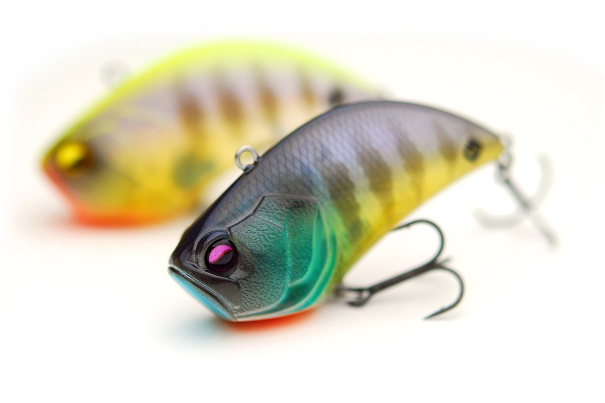
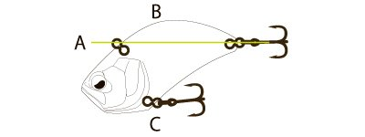
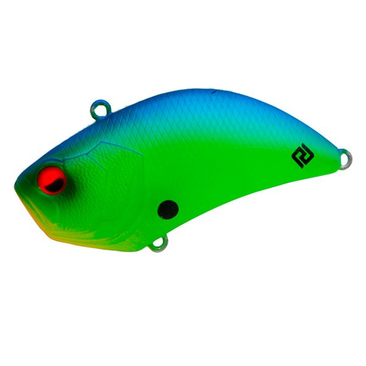
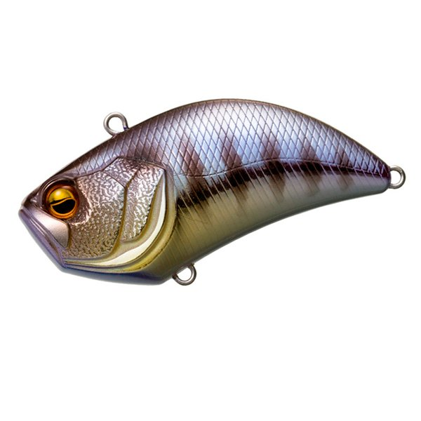
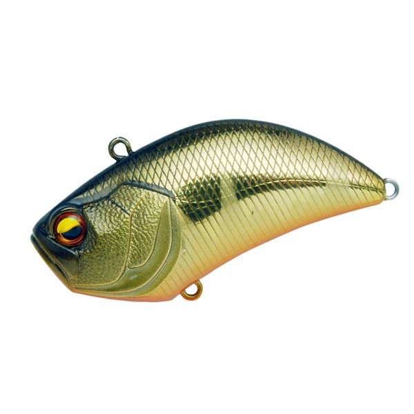
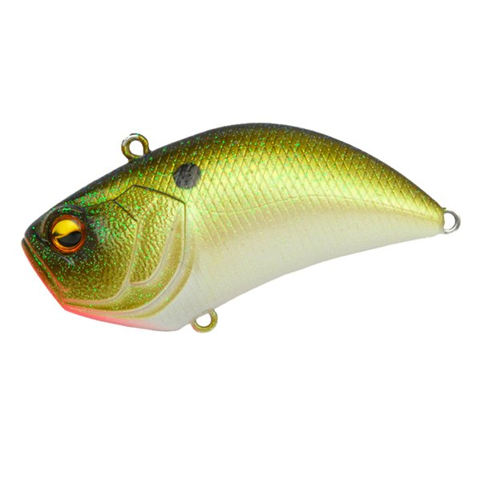

レベルバイブ
（LEVEL VIB）
レベルバイブは、レイドジャパンのバイブレーションプラグです。岸釣りのハードベイトの釣りをやり込んできた、レイドジャパンのこだわりを詰め込んでいます。
50mmクラスのバイブレーションにありがちな「飛ばない・速巻きできない・ウィードやゴミに弱い」を改善し、飛距離・速巻き・遅巻き・馬力・レスポンス・レンジキープ力の6つを高いレベルでクリアしたのが最大の特徴です。

画像出典:レイドジャパン公式HP
スペック
- メーカー
- RAID JAPAN（レイドジャパン）
- タイプ
- バイブレーション
- 全長
- 54mm
- 重さ
- 3/8ozクラス
- カラー
- 全26色
- ターゲット
- バス
- 価格
- 2,035円（税込）
▼今すぐチェック

レベルバイブの特徴
岸釣りのバイブレーションの死角をなくした、NEXT LEVELのバイブ
-
水平に近い姿勢「LEVEL BACK」
水平に近い姿勢で泳ぐので、レンジキープ力と根掛かりの避けやすさが大きく上がっている。
-
水を切るエッジの立った背中
エッジの立った背中が水を切って、素早い立ち上がりと力強いアクションを出す。
-
根掛かり・ゴミの付着を減らす設計
「水平スイム姿勢」「ボディの形」「斜めのフックアイ」で、バイブレーションの弱点である根掛かりとゴミの付着を減らしている。
レベルバイブの使い方
基本は、遠投して着底させ、ボトムから少し上を一定のスピードで巻くことです。速巻きでも遅巻きでも泳ぎが崩れにくいので、その日の反応に合わせてスピードを変えましょう。
ウィードの上を通す時は、巻くスピードを上げてレンジを浅く保ち、ウィードに触れたらロッドをあおって外すと、そのリアクションでバイトが出ることもあります。

画像出典:レイドジャパン公式HP
レベルバイブの得意な状況
陸っぱりで、広い範囲から活性の高いバスを探したい時や、ウィードやゴミが多い野池・リザーバーで出番です。
小さいのによく飛び、水平姿勢で根掛かりやゴミを拾いにくいのが強み。50mmクラスのシルエットで、小さいベイトを食べているバスもよく釣れるバイブレーションです。
ワンポイント
シャローのウィードエリアでは、着底させずにカウント2〜3で巻き始め、ウィードの頭をかすめるレンジを通すと、根掛かりを避けながらリアクションバイトを取りやすくなります。
人気カラー
レベルバイブの人気カラーを紹介します。

ブルーバックチャート濁りがある時や、まず反応を見たい時に。

チギルギル（ブルーギル）を食べているバスに。

リアルキンクロ金のフラッシングで、濁りや光量が少ない時に。

パールシャッドベイトフィッシュを意識したナチュラルなカラー。
※全26色。
画像出典:レイドジャパン公式HP
▼今すぐチェック
レベルバイブに似ているルアー
-
 TNバイブレーション
ジャッカル
詳細はこちら＞
TNバイブレーション
ジャッカル
詳細はこちら＞
根掛かりしにくいバイブレーションの定番。
-
 エッジバイブ120
エレメンツ
詳細はこちら＞
エッジバイブ120
エレメンツ
詳細はこちら＞
大きめのバイブレーション。大きいベイトの時に。
-
 モラモラ
オーバスライブ
詳細はこちら＞
モラモラ
オーバスライブ
詳細はこちら＞
ひと味違う形のバイブレーション。